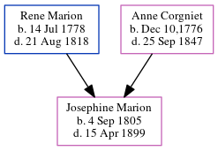

Josephine Marie Marion 1805 - 1899
[ Home ] | [ Calendar ] | [ Surnames Index ] | [ Census Index ] | [ Family History ]The child of Rene Marion (a baker) and Anne Corgniet (a tailoress), Josephine Marion, the four times great-aunt of Michele Copp (née Phillips), was born in France on Sep 4, 18051,2,3,4,5.
During her life, she was living in St Michael and St Phillip, Charleston, South Carolina in 18501; in Atlanta, , Georgia, USA in 1852; and in Atlanta Ward 2, Fulton, Georgia in 18602 and in 18703. she arrived in Charleston, South Carolina in 1850.
She died on Apr 15, 1899 in Atlanta, GA and was buried in Atlanta, Fulton County, Georgia after Apr 15, 18996.
Parents
- Rene Yves was born on Jul 14, 1778
- Anne Marie was born in Dec 10,1776
Citations
- 1850 United States Federal Census Online publication - Provo, UT, USA: The Generations Network, Inc., 2005.Original data - United States of America, Bureau of the Census. Seventh Census of the United States, 1850. Washington, D.C.: National Archives and Records Administration, 1850. M432,
- 1860 United States Federal Census Online publication - Provo, UT, USA: The Generations Network, Inc., 2004.Original data - United States of America, Bureau of the Census. Eighth Census of the United States, 1860. Washington, D.C.: National Archives and Records Administration, 1860. M653, 1
- 1870 United States Federal Census Online publication - Provo, UT, USA: The Generations Network, Inc., 2003.Original data - 1870. United States. Ninth Census of the United States, 1870. Washington, D.C. National Archives and Records Administration. M593, RG29, 1,761 rolls. Minnesota. Minnes
- Passenger and Immigration Lists Index, 1500s-1900s Online publication - Provo, UT, USA: The Generations Network, Inc., 2006.Original data - Filby, P. William, ed.. Passenger and Immigration Lists Index, 1500s-1900s. Farmington Hills, MI, USA: Gale Research, 2006.Original data: Filby, P. William, ed.. Passe
- U.S., Find a Grave Index, 1600s-Current Ancestry.com Operations, Inc. (Find a Grave. Find a Grave. www.findagrave.com.)
- U.S., Find a Grave Index, 1600s-Current Ancestry.com Operations, Inc. (Find a Grave. Find a Grave. www.findagrave.com.)
Family Tree
Generated by ged2site. Last updated on Jun 6, 2024